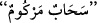

“Görmez misin ki Allah bulutları sevk ediyor”. “
”, bir şeyi yumuşaklık ve
kolaylıkla bir tarafa sevk etmek demektir. Bu kelime genellikle az bir şeyi veya önemsiz
bir şeyi sevk etmede kullanılır. Değersiz bir sermaye anlamındaki
bu
kelimeden alınmıştır. Değeri pek az olduğu için herkes onu rahatlıkla yanında taşıyabilir
ve başkasına verebilir. Burada Allah’ın kudretine nisbetle bulutun önemsiz şeylerden
olduğuna îmâ vardır. Bulutun “
” diye isimlendirilmesi, onun havada (rüzgar
vâsıtasıyla) değişik yönlere çekilmesi sebebiyledir. Sehâb, cins ismi olup tek bir bulut
için de daha fazla bulut için de kullanılır. Burada kasdedilen ise bulut parçalarıdır.
Âyetin mânâsı şöyledir: Elbette Allah Teâlâ’nın bulutları dilediği yöne rahatlıkla
sürüklediğini baş gözünle gördün.
“Sonra onları bir araya getirip” o bulutun parçalarını birbirine ekleyerek onu tek bir
şey hâline getirip “üst üste yığıyor.” Sonra onu, bir kısmı bir kısmının üstüne gelecek
şekilde üst üste yığıyor.
Üst üste yığılan şeye
denir. el-Müfredât’ta şöyle der:
denir.
Bu üst üste yığılmış bulutlar demektir. “
” ise bir kısmı diğer bir kısmı üstüne yığılan
şey demektir.”
“İşte görüyorsun ki” yoğunlaşmasının ve üst üste yığılmasının ardından “bunlar
arasından yağmur çıkıyor.” Ebü’l-Leys der ki: “
” şiddetli ve hafif her türlü
yağmur mânâsınadır.” el-Müfredât’ta ise şöyle der: “
”ın yağmurun arasında bulunan
toz gibi şeylere denir. Bu kelimeyle yağmur da ifâde edilir.”
Buradaki ‘görme’ baş gözüyle olandır. “
” iki şey arasındaki boşluk anlamındaki “
”in çoğuludur. Burada yağmurun çıkış yerleri murâd edilmiştir. Yâni sen yağmuru, bu
bulutların arasından çıkar halde ve üst üste yığılmış olan bu bulutları birbirinden ayırır
halde görürsün.
Kâ‘b der ki: “Bulutlar, yağmuru eleyen kalburlardır; eğer bunlar olmasaydı yağmur,
üzerine indiği her şeyi perişan ederdi.”
“O, gökten,” yâni bulutlardan “oradaki dağlardan” yâni büyüklükte dağlara
benzeyen gökteki büyük bulut parçalarından “dolu indirir.”
‘Gök’ten maksad bulutlardır. Çünkü üstünde bulunan her şey sana göre semâdır. Her
bir şeyin semâsı, üst tarafında bulunan şeylerdir.
“
”, yağmurun havada donup katılaşması hâlidir; yâni donmuş su demektir. Nitekim
el-Müfredât’ta böyle denir.
Mânâ ise şöyledir: Allah, gökten orada bulunan dağlar büyüklüğündeki bulutlardan
başlayarak bir miktar dolu indirir.
Bazıları da der ki: “Allah Teâlâ gökte doludan ve kardan pek çok dağ yaratmış ve
onlara meleklerden bir melek tâyin etmiştir. Yeryüzünün bir bölgesine dolu ve kar
yağdırmak istediğinde o meleğe bunu emreder. O da Allah’ın dilediği ölçü ve miktarda
oraya kar yağdırır. Her kar ve dolu tanesinin başında, onları emredilen yerlere ulaştıran